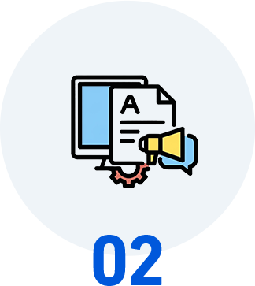

リスクゼロで始められる、安心のAI導入
業務診断サービス
データの外部送信なし。
業務中断なし。
1名から段階的に始められます
- ＼ 60秒で簡単入力！ ／ 無料相談はこちら
- ＼ お急ぎの方はこちら！ ／ 048-871-7160 平日9:30〜18:30（土日・祝除く）


ローカル保存
-
外部送信 なし
PC操作ログは
完全ローカル保存で安心 -
業務中断 なし
日常業務を続けながら
自然な形でデータ収集 -
1名から 開始OK
まず1名で試して
効果確認後に全社展開
こんな不安
ありませんか？
-
社員の業務データが
外部に漏れないか心配 -
AI導入で業務が混乱
しないか不安 -
効果が出なかった場合の
リスクが怖い -
社員がAI監視と感じて
反発しないか -
いきなり全社導入は
ハードルが高い


AI業務改善チェックなら、
データの安全性を確保しながら、1名から段階的に
AI導入の効果を確認できます。
安心の調査体制
AI業務改善チェックでは、セキュリティとプライバシーに配慮した3つのチャネルでデータを収集。
業務を止めることなく、安全に業務の実態を把握します。
-
PC操作ログ取得 
ActivityWatchで自動記録。データは完全ローカル保存で外部送信は一切なし
-
音声振り返り 
毎日たった5分の音声録音。業務を中断せず自然な形で振り返り
-
業務日報フォーム 30分単位の簡単入力。会議・電話など非PC業務も含む全体像を安全に把握
-
AI自動分析 
NDA締結のもと、収集データをAIが統合分析。個人情報の取り扱いも厳重管理
-
改善提案書の作成 
データに基づく客観的な提案書を作成。導入判断は提案書を見てから決められます
-
段階的な実行支援 （オプション） 
納得いただいた場合のみ、実行支援に移行。無理な営業は一切いたしません
安心
すべてのプロセスで
セキュリティを最優先
-
データ外部送信なし・業務中断なし・
1名から段階的に始められる リスクゼロのAI導入診断で
業務改善の第一歩を踏み出しませんか？ -
- ＼ 60秒で簡単入力！ ／ 無料相談はこちら
- ＼ お急ぎの方はこちら！ ／ 048-871-7160 平日9:30〜18:30（土日・祝除く）
-


選ばれている理由
-

データの安全性を最優先 PC操作ログは完全ローカル保存。NDA締結のもと厳重にデータ管理します。
-
 業務を止めない調査設計 日常業務を続けながらデータ収集。従業員の負荷は1日15分程度です。
-

段階的に始められる まず1名から診断。効果を確認してから全社展開できるので、失敗リスクがありません。
|
一般的なDXコンサル | |||||||
|---|---|---|---|---|---|---|---|---|
| データ管理 |

クラウド送信・管理体制が不明確 |
|||||||
| 業務影響 |

密着ヒアリングで |
|||||||
| 導入規模 |
全社一括導入が前提 |
|||||||
| 成果物 |
主観的なレポート |
|||||||
| 営業圧力 |
高額契約への誘導 |
| データ管理 | |
|---|---|
| 一般的なDXコンサル | |
| ローカル保存・NDA締結で厳重管理 |
クラウド送信・管理体制が不明確
|
| 業務影響 | |
| 一般的なDXコンサル | |
| 業務中断なし・1日15分の負荷のみ |
密着ヒアリングで 業務中断が発生 |
| 導入規模 | |
| 一般的なDXコンサル | |
| 1名から段階的に拡大可能 |
全社一括導入が前提
|
| 成果物 | |
| 一般的なDXコンサル | |
| データに基づく客観的な提案書 |
主観的なレポート
|
| 営業圧力 | |
| 一般的なDXコンサル | |
| 無理な営業なし・納得してから導入 |
高額契約への誘導
|
料金プラン
「AI導入に興味はあるけど、リスクが心配…」というお悩みを解決するプランをご用意
-
セルフプラン
日報と音声で手軽に。リスクなく始めたい企業様に
50,000 円
 1名分の調査＋提案書
1名分の調査＋提案書
-
おまかせプラン
3チャネル方式で精密分析。確実な診断をしたい企業様に
100,000 円
1名分の精密調査＋提案書
-
全社パック
複数名を一括調査。組織全体の改善マップを作成
お見積もり
10名以上の全社診断
導入事例
安心してAI導入を進められた改善事例をご紹介します。
- CASE 1
-
営業進捗管理の業務改善（営業代行会社／アシスタント業務）

- 課題
- 紙ベースでの営業進捗管理により、管理・集計作業に月20時間を要していた。
- ご提案内容
- データ外部送信なしの安全な環境で業務を分析。スプレッドシートを活用した進捗管理フローへの移行を提案。
- 改善結果
- 安心して導入でき、作業時間を 月10時間に短縮。
- CASE 2
-
勤怠管理業務の効率化（印刷会社／総務業務）
- 課題
- Excelによる勤怠管理を手作業で行っており、集計・確認に月50時間かかっていた。
- ご提案内容
- 業務を中断せずにデータを収集し、マクロを活用した勤怠集計の自動化を提案。段階的に導入を進行。
- 改善結果
- リスクなく導入でき、作業時間を 月5時間に短縮。
- CASE 3
-
社内問い合わせ対応の省力化（住宅会社／人事業務）
- 課題
- 社内からの問い合わせ対応や資料確認に月10時間の対応工数が発生していた。
- ご提案内容
- NDA締結のもと安全にデータを分析し、AIを活用した資料確認・案内フローの導入を提案。
- 改善結果
- セキュリティ面も安心して導入でき、作業時間を 月5時間に短縮。
ご利用の流れ
-

01 お問い合わせ
フォームまたはお電話よりお気軽にお問い合わせください。
-

02 ヒアリング・NDA締結
秘密保持契約を締結し、安全な調査環境を整備します。
-
03 業務データ収集（1週間）
日常業務を続けながら、3チャネル方式で安全にデータを収集します。
-

04 AI分析・提案書作成
収集データをAIが分析。業務ごとの改善提案書を作成します。
-
05 提案書の納品・説明
改善提案書を納品。実行に移すかどうかはお客様のご判断です。
-
データ外部送信なし・業務中断なし・
1名から段階的に始められる リスクゼロのAI導入診断で
業務改善の第一歩を踏み出しませんか？ -
- ＼ 60秒で簡単入力！ ／ 無料相談はこちら
- ＼ お急ぎの方はこちら！ ／ 048-871-7160 平日9:30〜18:30（土日・祝除く）
-
よくあるご質問
- 調査データが外部に漏れることはありませんか？
-
PC操作ログは完全ローカル保存。音声・日報データもNDA締結のもと厳重に管理します。
- 従業員が「監視されている」と感じませんか？
-
記録されるのはアプリ名と使用時間のみ。画面内容やキー入力は一切記録されません。
- 効果が出なかった場合のリスクは？
-
提案書の作成が成果物のため、導入を進めるかどうかはお客様のご判断です。無理な営業は一切いたしません。
- いきなり全社導入する必要がありますか？
-
いいえ。1名からスタートし、効果を確認してから段階的に拡大できます。
- セキュリティポリシーの厳しい業種でも利用できますか？
-
はい。金融・医療・官公庁など、高いセキュリティ基準が求められる業種でもご利用いただけるよう、個別のセキュリティ要件に対応いたします。
お問い合わせ
 当社は、一般財団日本情報経済社会推進協会（JIPDEC）より、個人情報の扱いについて適切な管理体制を整備しているとして、「プライバシーマーク」を取得しています。
当社は、一般財団日本情報経済社会推進協会（JIPDEC）より、個人情報の扱いについて適切な管理体制を整備しているとして、「プライバシーマーク」を取得しています。